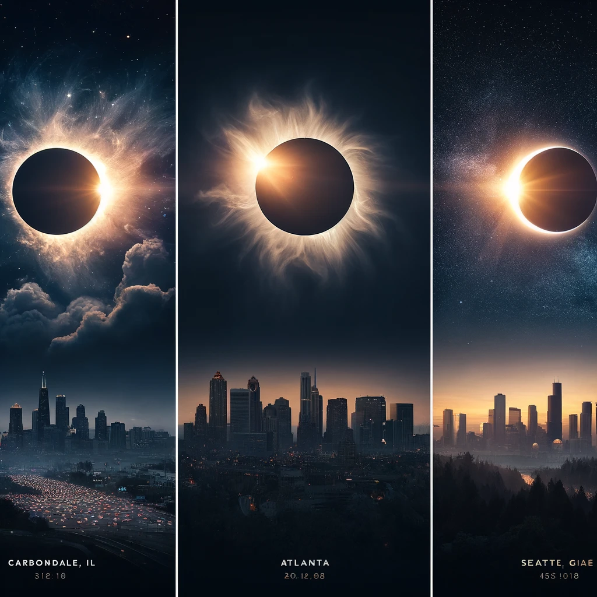
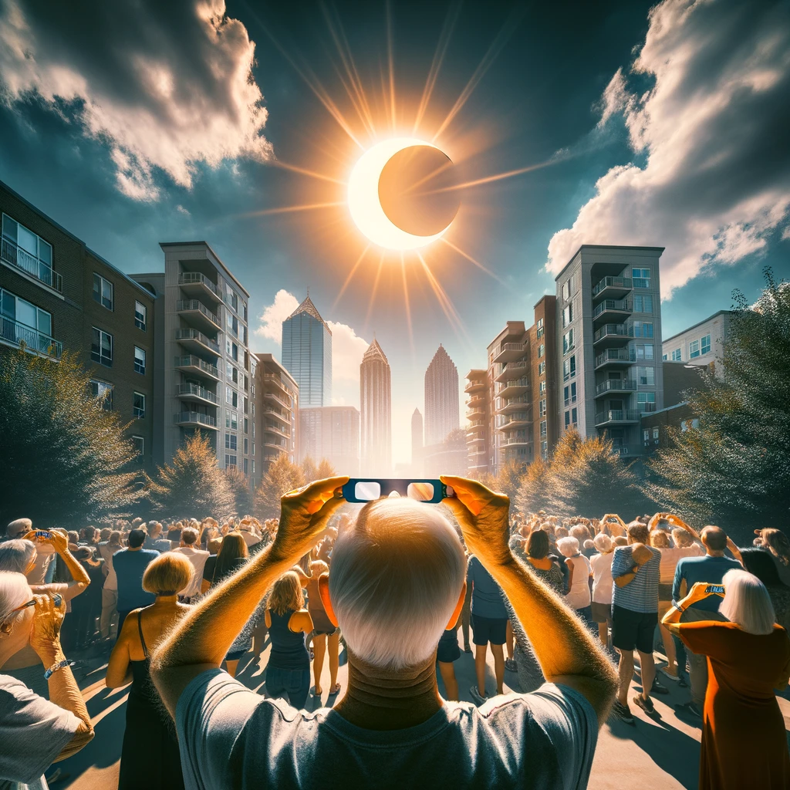
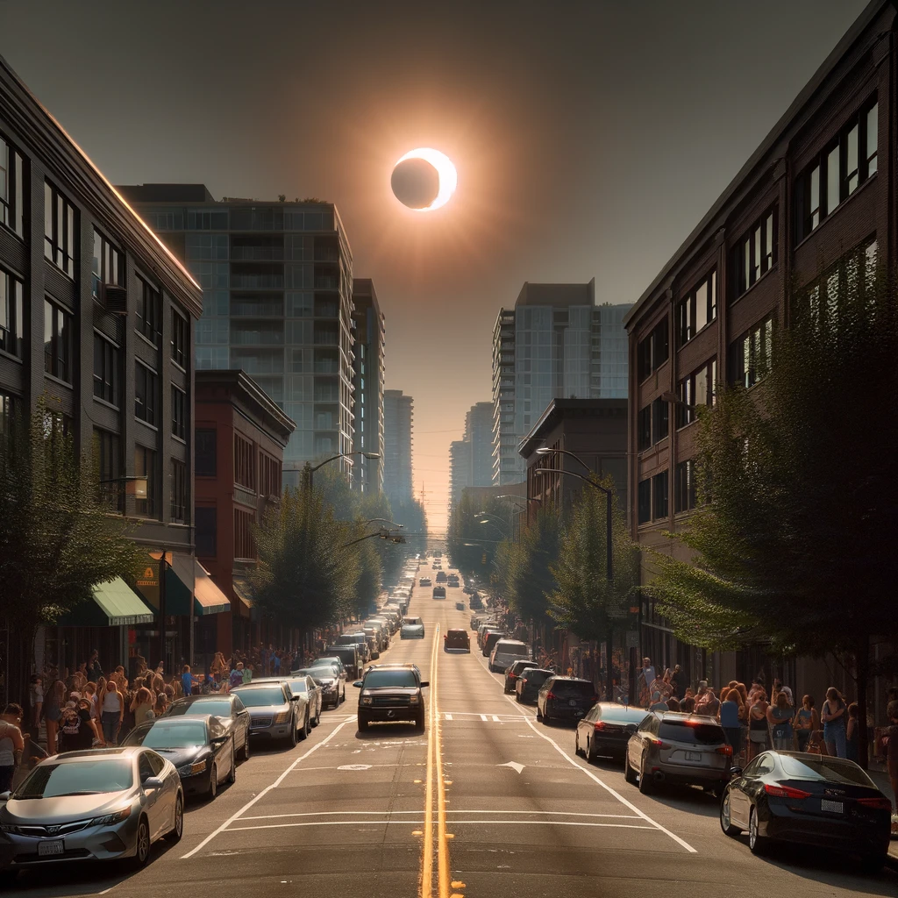

Produced by ChatGPT
Solar Eclipse Mania
Everyone was so excited about the solar eclipse last week that I thought it could be cool to have ChatGPT get in on the action as well. This could also be a great opportunity to put DALL-E’s image generation skills to the test.
Establishing a baseline
First I wanted to double check that ChatGPT would understand my request, so I started by establishing a baseline context.
I sent: “You are an astronomer who specializes in solar events. Are you aware of the recent solar eclipse that occurred?”
It replied: *“Yes, I’m aware of recent solar eclipses. Solar eclipses are fascinating celestial events where the Moon passes between the Earth and the Sun, temporarily obscuring part or all of the Sun’s image as seen from Earth. They can be total, partial, or annular, depending on the alignment and distances between the Earth, Moon, and Sun. If you have a specific eclipse in mind, I can provide more detailed information about it or general insights into why and how solar eclipses occur.”
To futher specify which eclipse I meant, I sent : *“There was an eclipse last week. What do you know about it?”
It replied: “The recent solar eclipse on April 8, 2024, was a total solar eclipse that traversed North America, covering parts of Mexico, the United States, and Canada. This astronomical event began over the South Pacific Ocean, with the first land experiencing totality on Mexico’s Pacific coast around 11:07 a.m. PDT. The path of totality, where observers could see the complete covering of the Sun by the Moon, stretched across North America from Texas to Maine before exiting over Newfoundland in Canada around 5:16 p.m. NDT.
During totality, observers within the path could witness the stunning visual of the Sun’s corona, a rare sight as the Sun’s bright face is completely obscured by the Moon. Surrounding areas experienced a partial eclipse, where the Sun was only partially covered by the Moon. The experience of totality included rapid changes in light, moving from what seemed like an eerie dim daylight to a deep twilight, enhancing the dramatic effect of the eclipse.”
Great, it knew the eclipse to which I was referring!
Making a request
Next, I was hoping to ask DALL-E to generate images from specific vantage points, so I asked: “User Can you provide an example of a city that was 1) in the path of totality, 2) in partial totality, and 3) did not see the eclipse at all?”
It replied: “Sure! Here’s an example for each category based on the recent April 8, 2024 solar eclipse:
In the Path of Totality: Carbondale, Illinois, experienced the full spectacle of the total solar eclipse. Observers in Carbondale saw the Moon completely cover the Sun, revealing the Sun’s corona and turning day into twilight for a brief period.
In Partial Totality: Atlanta, Georgia, was outside the path of totality, so observers there experienced a partial solar eclipse. In Atlanta, the Moon covered a significant but not complete portion of the Sun, resulting in a noticeable darkening of the sky depending on the extent of coverage at the peak of the eclipse.
Did Not See the Eclipse at All: Due to the nature of solar eclipses, where the Moon’s shadow is cast on a specific area of the Earth, there isn’t a scenario where a city within the visibility range of the eclipse saw nothing at all, unless obscured by weather conditions. However, cities far from the path like Seattle, Washington, saw a very minimal partial eclipse—essentially negligible—with only a tiny fraction of the Sun being covered by the Moon, which might not have been noticeable without proper solar viewing equipment.”
This was perfect, so I followed up with: “Can you generate images of what the eclipse would have looked like in each of these cities?”
Of course, ChatGPT being buggy as always, replied: “I’m unable to directly generate images that show what the eclipse would have looked like in specific cities. However, I can describe the general appearance in each location:
Carbondale, Illinois (Total Eclipse): Observers in Carbondale would have seen a dramatic transformation of the day into near-night. As the Moon completely covered the Sun, the sky would darken substantially. The corona of the Sun, a glowing halo of plasma, would become visible around the silhouette of the Moon. This spectacular sight is often accompanied by a noticeable drop in temperature and a stillness in nature.
Atlanta, Georgia (Partial Eclipse): In Atlanta, the Moon would have partially covered the Sun, creating a crescent shape of the visible part of the Sun. The coverage would be substantial but not complete, so the sky would darken slightly, similar to a cloudy day. The environment wouldn’t experience the dramatic changes seen in totality, but the partial eclipse could still be an impressive sight with the right viewing equipment.
Seattle, Washington (Minimal Partial Eclipse): The change in Seattle might have been subtle enough to go unnoticed by many. With only a small part of the Sun being obscured by the Moon, the illumination during the eclipse would look slightly dimmed, akin to the effect of thin clouds passing in front of the Sun. The eclipse’s impact here would be minimal without the use of solar viewing glasses to directly observe the Sun.”
Because this is fundamentally not true, and ChatGPT can obviously provide images, I simply said: ” Yes you can generate images, please try.”
And it immediately replied with the following image: 
This image looked good, but I noticed that the image did not align with the description that it had outlined above regarding the totality of the eclipse in each respective city.
I said: “That is incorrect. Please reference the descriptions that you provided about what the sun would have looked like in each city. let’s start with carbondale, where there was a total eclipse. please generate an image of a total eclipse”
It generated this image:
This was at least a total eclipse, but it was not quite what I was looking for. I responded: “Please change the setting so that the image looks like it is from the point of view of random person living in carbondale. what would that person have seen?”
It responded with this image:
Good enough!
Last cities
That was pretty good, so I figured we could move back to the next cities! I said: *“Great, now please provide an image of the eclipse from the perspective of a person in atlanta georgia”
It replied: 
I appreciated that this one shows a partial eclipse!
Next I asked: “Great, now can you provide an image of the eclipse from the perspective of someone in seattle, washington?”
It replied with: 
The eclipse here was a bit too complete given that Seattle was not in the path of totality, but despite a few more requests, I could not get ChatGPT to change it.
Ultimately, ChatGPT performed ok here. It was not amazing at producing the images but I was impressed with the real-time data that it had regarding the eclipse!